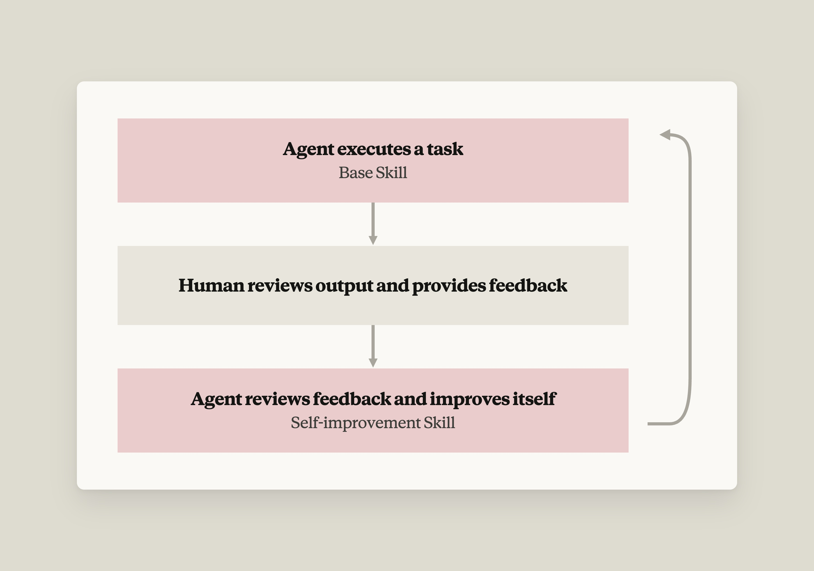

사람이 준 피드백은 보통 세션이 끝나면 사라진다. Warp는 그 피드백을 스킬(Skill) 파일에 쌓아 올려, 에이전트가 쓸수록 좋아지는 자기개선 루프를 만들었다.
이 시리즈는 스타트업이 AI로 자기 산업을 어떻게 바꾸고 있는지를 다룬다. 이번 글의 주제는 Warp가 흘려보내던 사용자 피드백을 에이전트의 자기개선 루프로 바꾼 방법이다.
| 이름 | Warp |
| 창업 | 2020년 |
| 창업자 | Zach Lloyd (CEO) |
| 스택 | Rust, Golang, GitHub Actions, 자체 에이전트 오케스트레이션 플랫폼(Oz), Claude Platform |
| 규모 | 누적 투자 7,300만 달러 · 월 80만 명의 개발자가 Warp 위에서 작업 · 포춘 500대 기업의 56%가 사용 · Warp 안에서 지금까지 1,000만 건의 Claude Code 세션이 실행됐고 주당 40만 건 이상 · Warp Agent 대화는 누적 4,000만 건 |
한 줄 요약: 첫 프롬프트로 80%만 맞히는 에이전트는 사용자에게 시끄러운 도구다. Warp는 프롬프트를 손으로 계속 고치는 대신, 스킬 파일 두 개(도메인 스킬 + 개선 스킬)로 사람 피드백이 시간에 따라 누적되게 만들었다.
에이전트는 반복되는 작업을 믿을 만하게 처리해야 한다. 작업의 80%만 맞히는 1차 프롬프트는 사용자 입장에서 잡음이 많고 성가신 경험을 만든다. Warp는 이걸 몸으로 배웠고, 그 교훈을 제품 전략에 반영해 전 세계 약 100만 명의 개발자에게 더 나은 경험을 만들었다.
AI 기반 터미널이자 에이전틱 개발 환경인 Warp는 Claude Platform 위에서 제품을 만든다. 이 "시끄러운 경험" 문제가 처음 터진 곳은 사내 코드 리뷰 에이전트였다. 엔지니어들은 에이전트가 도움 안 되는 코멘트를 달고 품질 낮은 결과물을 낸다고 불평했다.
팀이 처음 시도한 건 임시방편이었다. 코드 리뷰가 실패한 사례를 보고 프롬프트를 손으로 다시 쓰는 것. 결과물은 쓸 만해졌지만 확장되지 않았다. AGENTS.md 같은 컨텍스트 파일을 개선하는 것도 도움은 됐지만 완전한 해결과는 거리가 멀었다.
결국 팀이 깨달은 진짜 문제는 이것이었다. 에이전트에게 준 피드백은 그 목적이 무엇이든 세션이 끝나면 대개 사라지고, 그러면서 결정적인 컨텍스트가 에이전틱 루프 밖으로 빠져나간다는 것. 이들의 해법은 Agent Skills 기반 프레임워크로, 피드백이 시간에 따라 복리로 쌓이며 에이전트의 출력을 계속 다듬어 나가는 자기개선 에이전트를 만드는 것이었다.
핵심 기법은 스킬(skills)을 이용한 자기개선 루프다. 스킬은 지식을 파일 형태로 인코딩한 것이라서, 지시사항을 원(raw) 프롬프트 밖에 둘 수 있다. Warp가 발전시킨 자기개선 에이전트 아키텍처는 스킬 두 개와 그 사이에 끼어드는 사람의 피드백으로 이뤄진다.

내부(inner) 스킬 = 기본(base) 스킬은 기능적 도메인 지식과 지시사항을 담는다. 예를 들어 PR이 열리면 Warp의 코드 에이전트가 이 기본 스킬과 컨텍스트를 가지고 실행돼 리뷰를 만들어낸다.
에이전트 출력에 대한 사람의 피드백은 자기개선 루프의 결정적인 구성 요소다. 코드 리뷰라면 엄지척 하나처럼 단순해도 되지만, 구체적일수록 좋다.
"사람이 '이건 좋고 쓸모 있는 코멘트였다'고 확인해 줄 수도 있습니다. 하지만 코드 리뷰가 왜 별로였는지 자세한 이유를 줄 수도 있죠. '이 변수 이름을 바꾸라고 했는데, 우리 코드베이스 관례상 이런 종류의 전역 변수는 이런 네이밍을 씁니다' 같은 구체성이 다음번엔 제대로 하는 법을 에이전트에게 알려줍니다."
— Zach Lloyd, Warp 창업자
외부(outer) 스킬 = 개선(improver) 스킬은 작업 단위가 아니라 일정에 따라 도는 관찰자 에이전트로 동작한다. 쌓인 사람 피드백을 끌어와, 에이전트가 제안한 것과 사람이 반응한 것을 비교하고, 기본 스킬에 작고 초점이 분명한 수정을 제안한다.
스킬은 그냥 평범한 파일이기 때문에 에이전트가 아주 잘 고친다. 그리고 이 수정은 리뷰·승인·머지가 가능한 형태라서 평소 쓰던 PR/코드 리뷰 워크플로를 그대로 탈 수 있다. 머지되고 나면 다음번 내부 스킬 실행이 그 개선을 물려받는다.
Warp는 이제 이 패턴을 오픈소스 저장소 전체에 적용하고 있다. 스펙 작성 에이전트, 리뷰 에이전트, 트리아지 에이전트가 각자 자기 자기개선 루프를 하나씩 가지고 돈다.
"파일 기반 스킬은 지식을 프롬프트에 직접 넣지 않고도 에이전트용으로 인코딩하는 방법입니다. 에이전트가 일하는 도중에 그냥 찾아보면 되는 것이죠. 프레임워크 자체는 사실 아주 단순합니다. 도메인별 기본 스킬이 있고, 그 도메인 스킬을 다듬는 개선 스킬이 있다. 이 단순함이 이 접근법의 아름다움입니다."
— Zach Lloyd
다음은 에이전틱 루프에 쓸 자기개선 스킬을 작성할 때 Warp 팀이 검증한 팁들이다.
Warp의 이슈 트리아지 에이전트가 이 자기개선 에이전트 스킬 프레임워크를 잘 보여준다. 패턴은 누군가 새 GitHub 이슈를 열 때마다 발동한다. GitHub Action이 에이전트를 띄우고, 에이전트는 이슈의 복잡도와 실현 가능성을 분석해 라벨을 붙이고 수정 방향을 제안한다. 이 트리아지 에이전트는 각 라벨의 의미와 행동 전에 코드베이스를 조사하는 방법을 담은 내부 스킬 파일 위에서 돈다.
어떤 샘플 이슈에서 1단계 내부 스킬은 대체로 잘했지만 라벨 하나를 놓쳤다. ready to spec — 기여자가 이 이슈를 두고 제품·기술 스펙을 쓰기 시작해도 된다는 신호다. Warp 팀의 메인테이너가 그 구멍을 발견하고 작업이 벌어지는 바로 그 자리, 즉 이슈에 직접 피드백을 남겼다. 결정적으로 그는 자신이 무엇을 기대했는지와 왜 그걸 기대했는지를 함께 설명했다. 나중에 에이전트가 흡수하기 쉬운, 실행 가능한 피드백이었다.
외부 개선 스킬은 Warp의 에이전트 오케스트레이션 플랫폼 Oz에서 "update triage"라는 예약 실행 에이전트로 돈다. 이 에이전트는 GitHub에 인증하고, 스킬에 같이 번들된 파이썬 스크립트를 실행해 피드백이 달린 최근 이슈들을 끌어오고, 그것들을 JSON 파일로 요약한 뒤 다시 컨텍스트로 읽어들였다. 번들된 스크립트 자체가 모범 사례다. 스킬은 매 실행마다 코드를 새로 짜는 대신 리소스 파일을 참조할 수 있다.
거기서부터 에이전트는 메인테이너 코멘트 속의 구체적인 피드백 신호를 식별하고, 그걸 담아내는 가장 작은 수정을 제안했다. 에이전트는 내부 스킬을 고치는 PR을 열었다 — UI나 UX의 정확한 모양이 아직 정해지지 않았더라도, 이슈가 실재하는 문제를 서술하고 있다면 ready to spec 라벨을 붙이라는 내용이었다.
업데이트 전체가 스킬 파일이기 때문에, 이건 평범한 코드 리뷰 워크플로를 그대로 탄다. PR에는 어떤 신호가 이 변경을 촉발했고 무엇을 바꿨는지 설명하는 설명문이 붙어 있었다. 사람이 리뷰하고, 승인하고, 머지하면, 다음번 트리아지 스킬 실행이 새 지식을 물려받는다. 마지막 사람 단계가 루프를 닫고, 실제로 무엇이 바뀔지에 대한 통제권을 사람에게 남겨둔다.
이것이 Warp가 지금 오픈소스 저장소 전반에서 대규모로 돌리고 있는 바로 그 메커니즘이다. 스펙 작성 에이전트, 리뷰 에이전트, 트리아지 에이전트가 각각 자기 자기개선 루프를 하나씩 지고 있다.
작업이 무엇이든, 이런 루프를 처음부터 안에 심어두면 에이전트는 시간이 지나며 좋아진다. 사람의 피드백 신호를 붙잡고, 그걸 스킬 업데이트로 바꾸고, 그렇게 에이전트를 일회성 도우미에서 조직 전체에 복리로 쌓이는 유능한 시스템으로 키우는 것이다.
| 스킬과 메모리를 혼동하고 있지 않은가? | 스킬은 절차적이고 안정적이다 — "X를 어떻게 하는가"이고, 실행에 무관하며, 의도적으로 바꾼다. 메모리는 추론 시점에 에이전트가 자동으로 쓰며 끊임없이 변한다. |
| 개선 루프는 하나면 되나, 에이전트마다 하나씩 필요한가? | 중간에서 만나라. 템플릿화한 기본 루프가 에이전트들 사이의 공통분모를 담고, 그 위에 도메인별 가중치를 얹는다. 개선 루프가 몇 개뿐이면 각자 하나씩 가져도 되지만, 100개라면 공유해야 한다. |
| 피드백이 틀렸을 땐 어떻게 되나? | 틀릴 거라고 가정하라. 에이전트가 피드백을 맹목적으로 받아들이게 두지 말 것 — 타당성을 점검할 컨텍스트를 주고, 누구의 입력을 셀지 걸러내고, 필터링 단계든 최종 리뷰 단계든 사람을 루프 안에 남겨둬라. |
| 당신의 도메인은 검증 가능한가? | 검증 하네스를 먼저 만들고, 그다음 에이전트가 그것에 맞춰 스스로를 조율하게 하라. 레퍼런스 말뭉치를 만들고, 출력을 레퍼런스와 비교하고, 고치고, 반복한다. |
| 검증 가능한 도메인이 아니라면? | 골든 출력에 대한 결정론적 eval이 존재하는 곳이라면 어디서든 그것에 기대라. 사람 피드백을 써야만 하는 곳에서는 도메인 전문가로 범위를 제한하라 — 수문을 열어젖히지 말 것. |
| 시스템 전체가 좋아지고 있는지는 어떻게 아나? | 사람들이 이미 눈으로 보는 전역 지표들(머지까지 걸린 시간, 기여자 수, 비용)을 추적해 개선 에이전트에게 다시 먹여라. 배포는 기어가기 → 걷기 → 뛰기 순으로. |
전체 웨비나 보기 — 라이브 데모와 함께, Warp가 팀 피드백에서 배우고 시간이 지나며 스스로 개선되는 에이전트를 Claude로 어떻게 만드는지 더 깊이 다룬다.
오늘 Claude Platform에서 만들기를 시작해 보라.